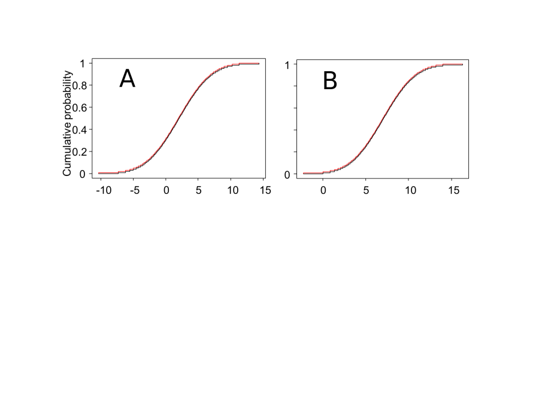
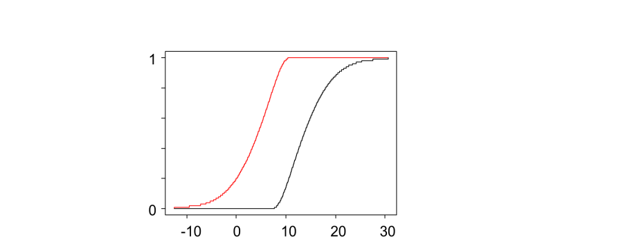
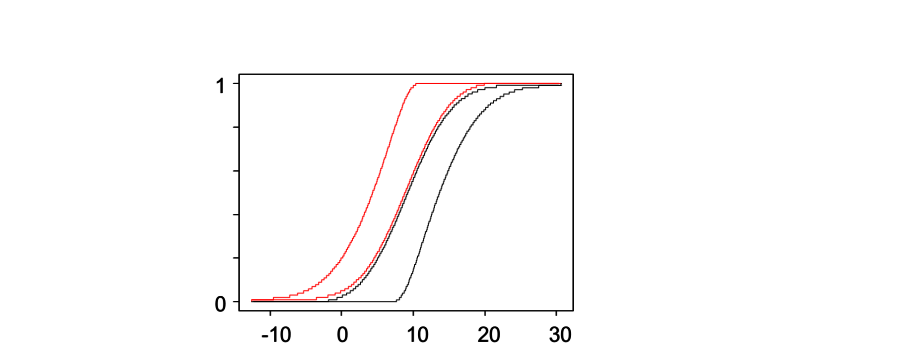
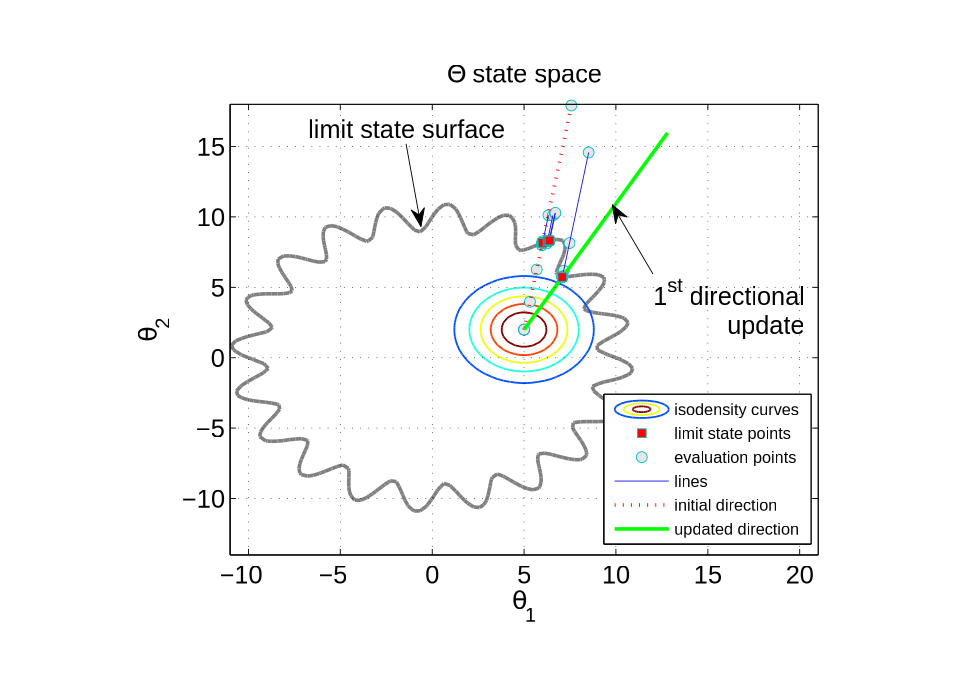
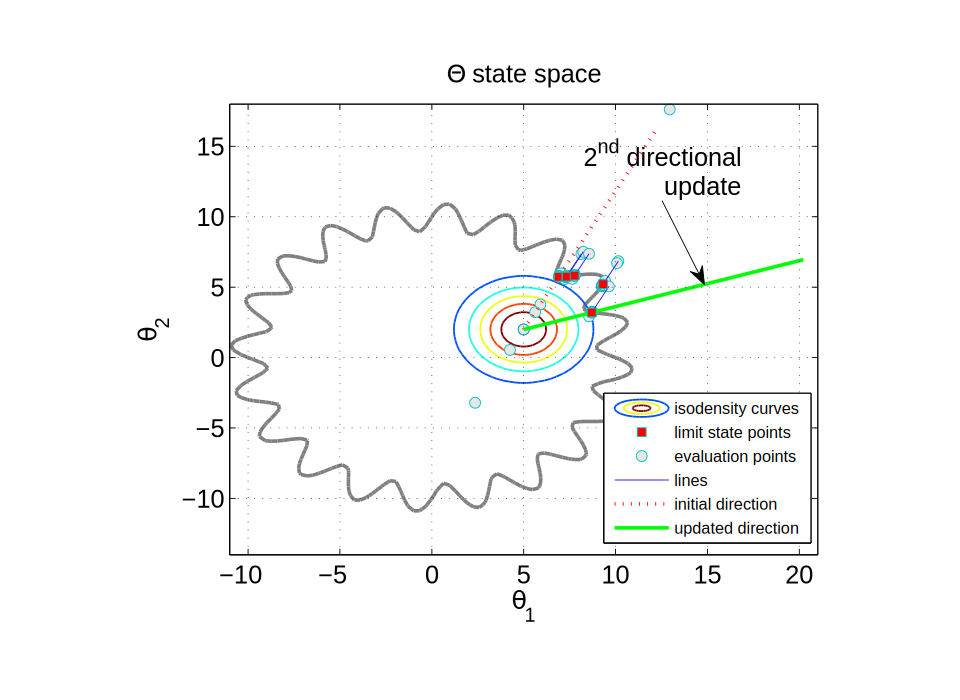
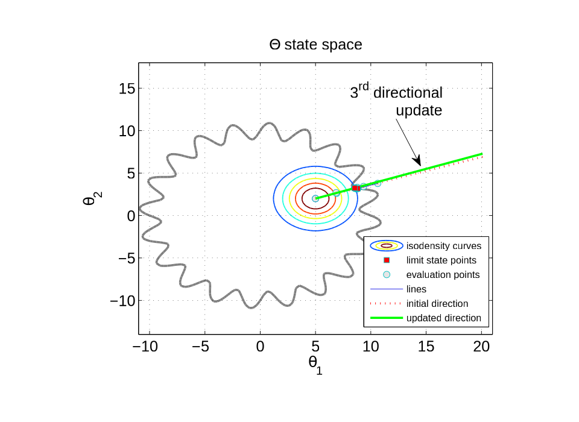
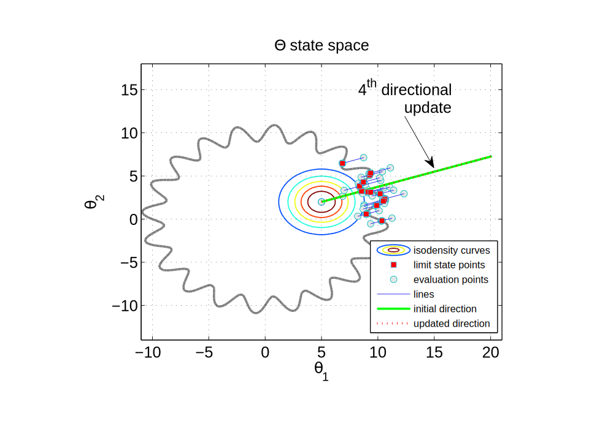
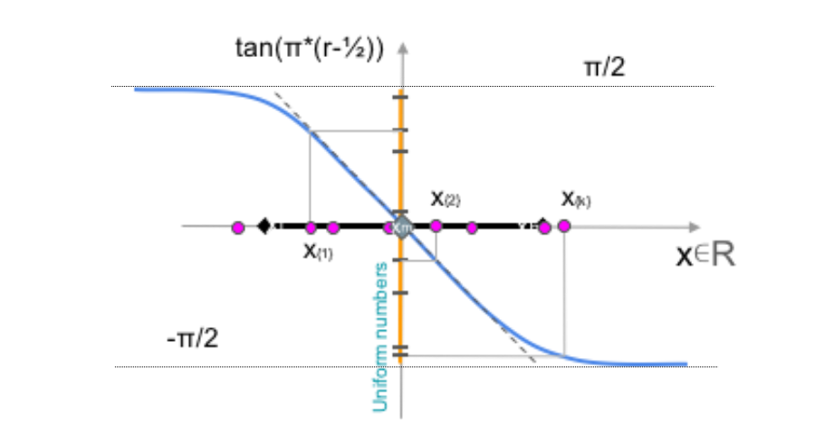

Digital simulation with uncertain numbers
Scott Ferson, Marco De Angelis, Nick Gray
Created by Marco De Angelis
“Uncertainties appear everywhere! … When using a mathematical model, careful attention must be given to uncertainties in the model.”Richard Feynman
“Uncertainty quantification is the missing piece of the puzzle in large scale computations.”Tim Barth
“We have to make the best model we possibly can, and then not trust it.”Robert Costanza
Epistemic uncertainty
- Arises from incomplete knowledge
- Incertitude arises from
- limited sample size
- measurement error
- use of surrogate data
- Reducible with empirical effort
Aleatory uncertainty
- Arises from natural stochasticity
- Variability arises from
- spatial variation
- temporal fluctuations
- manufacturing/material differences
- Not reducible by empirical effort
They must be treated differently
- Variability should be modeled as randomness with the methods of probability theory
- Incertitude should be modeled as ignorance with constraint or interval analysis
Credible uncertainty analysis
- Designers are likelier to use modeling results if they know the outputs are good enough
- Program managers could focus research on areas where uncertainty is intolerable
Uncertainty
- Artifactual uncertainty
- too few polynomial terms
- numerical instability
- can be reduced by a better analysis
- Authentic uncertainty
- genuine unpredictability due to input uncertainty
- cannot be reduced by a better analysis
- only by more information, data or assumptions
Uncertainty propagation
- We want the prediction to 'break down' if that's what should happen
- But we don't want artifactual uncertainty
- Repeated parameters
- Wrapping effect (or topology deception)
- Dependence problem
- Numerical instabilities
Repeated parameters
\[ A = \left[ 1,\ 2 \right] \]
\[ B = \left[ 2,\ 3 \right] \]
\[ C = \left[ -2,\ 5 \right] \]
\[ z = A \times \left( B + C \right) \]
\[ B + C = \left[ 0,\ 8 \right] \]
\[ z = \left[ 0,\ 16 \right] \]
\[ zz = A \times B + A \times C \]
\[ A \times B = \left[ 2,\ 6 \right] \]
\[ A \times C = \left[ -4,\ 10 \right] \]
\[ zz = \left[ -2,\ 16 \right] \]
\[ zz \supseteq z \] Sub-distributive
Inflated uncertainty
Wrapping effect
\[Ax = b \]
\[ A=\begin{pmatrix} [2, 4] & [-1,1] \\ [-1,1] & [2,4] \end{pmatrix};\ b \begin{pmatrix}[-3,3]\\ 0 \end{pmatrix} \]
\[ A=\begin{pmatrix} [2, 4] & [-1,1] \\ [-1,1] & [2,4] \end{pmatrix};\ b \begin{pmatrix}[-3,3]\\ 0 \end{pmatrix} \]
- 2+ variables
- Chained (or recursive) models
- Inverse problems
- Solution is not an interval!
\[x = A^{-1} b \]
Dependence problem
\[ [ \sup_{z=x+y} \max \left \{ F(x)+G(y)-1, 0 \right \},\ \inf_{z=x+y} \min \left \{F(x), G(y) \right \}] \]
\[ a \sim N(2,4) \]
\[ b \sim N(7,3) \]
a + b = ?



Numerical instability
- Truncations errors
- Mesh definition (PDEs)
- Resonance in dynamics
- Chaotic systems
- Taylor models
- Logical statements
- Complex numbers
- Sensitivity analysis
Uncertain numbers
Not uniform!
Math with uncertain numbers
- All standard mathematical operations
- Arithmetic (+, -, ×, ^, min, max)
- Logical operations (and, or, not, if, etc.)
- Transformations (exp, ln, sin, tan, abs, sqrt, etc.)
- Magnitude comparisons (<, ≤, >, ≥, etc.)
- Other operations (nonlinear ODEs, finite-element methods)
- Faster than Monte Carlo
- Guaranteed to bound the answer
- Optimal solutions often easy to compute
- Arithmetic (+, -, ×, ^, min, max)
- Logical operations (and, or, not, if, etc.)
- Transformations (exp, ln, sin, tan, abs, sqrt, etc.)
- Magnitude comparisons (<, ≤, >, ≥, etc.)
- Other operations (nonlinear ODEs, finite-element methods)
Probability bounds arithmetic
What's the sum of A + B?
Cartesian product
| A + B independence | A ∈ [1,3] p3 = 1/3 | A ∈ [2,4] p3 = 1/3 | A ∈ [3,5] p3 = 1/3 |
| B ∈ [2,8] q3 = 1/3 |
A+B ∈ [3,11] prob = 1/9 |
A+B ∈ [4,12] prob = 1/9 |
A+B ∈ [5,13] prob = 1/9 |
| B ∈ [6,10] q3 = 1/3 |
A+B ∈ [7,13] prob = 1/9 |
A+B ∈ [8,14] prob = 1/9 |
A+B ∈ [9,15] prob = 1/9 |
| B ∈ [8,12] q3 = 1/3 |
A+B ∈ [9,15] prob = 1/9 |
A+B ∈ [10,16] prob = 1/9 |
A+B ∈ [11,17] prob = 1/9 |
- Rigorous
- Best possible
Uncertainty compiler
- Intrusive UQ cannot be used on black-box codes
- But many codes and simulations are not "black"
- We know all the computations inside, CRYSTAL
- A compiler that translates Python/C/Fortran code to insinuate appropriate UQ code
“ I've got 50,000 lines of code which have taken 5 years to develop. I haven’t got the time to rewrite it. Also I don’t really understand what statistical tools I am meant to use ”An analyst at a major company
“ Uncertainty analysis is too important to be ignored. It is better to compute with what we know that make untenable assumptions we don’t. ”Anonymous
UQ compiler (UQCOMP)
- Read code and insert calls to a UQ library
UQCOMP -input=FILE.PY -uq=CONTROLLER.UQ -out=UQ_FILE.py
- Work automatically or with user input
- 1.25 -> [1.245, 1.255]
- Allow for natural language
- about(5) -> [3,7]; around(7.1) -> [7.0, 7.2]
- Parser, lexer and listeners are created with ANTLR https://www.antlr.org/
Application
- The quantity (a + b)^2 + c + b + a can be reduced to its optimal form \[ (a + b + ½)^2 + c – ¼ \]
- Use the reducing template \[u + u^2 = (u + ½)^2 – ¼ \] but first rearrange the order of the summed terms and let u be the quantity (a + b)
Strategy for template matching
- Parse the formula into a binary expression tree
- Apply each reducing template against every subexpression of the tree
- Count the remaining repeated uncertain parameters
- Repeat until the number is zero or no longer decreases
UQ library
- API in Python
- General interface
- OO
- Powerful existing modules
- Heavy-lifting in C and C++
- Interval matrix and vectors
- Fourier Transform
- Build on existing open-source libraries
Python API
- Flexible uncertainty definitions
A = interval("A", inf=-1, sup=1) # prints: A=[-1,1]
A = interval("A", mid=0, rad=1) # prints: A=[-1,1]
A = interval(-1,1) # prints: [-1,1]
- Naïve interval analysis {+, -, /, *, **}
- Support for automatic differentiation (e.g. Tensorflow)
- Decorators for immediate access to
- interval contractors and inclusion functions
- preconditioning
- approximation (Bernstein expansions, Cauchy-deviate, ..)
Black-box models
- Some models or functions can't be decomposed into simple arithmetic operations
- Secrecy
- Legacy codes
- Just too complex
- If we can only query the function by evaluating it for particular inputs, it's called a black box
- How can we propagate interval uncertainty through a black-box model?
\[ v = h(F,E,I,L,e) \]
\[ p_F = P [V>v_t] \]
\[ v_t \]
\[ v \]
Random slicing
- Can be used for black-boxes to make imprecise estimations
- Produces "samples" for the p-box
- Propagation of incertitude still needed
- Accelerating strategies
- Low discrepancy sampling
- Importance sampling
- Dependency among p-boxes can be included
Random slicing
i = 1, 2, ..., D# Dimension
k = 1, 2, ..., N# Number of samples (slices)
X = (Xi)# ind. Probability Boxes
for k in range(0, N)
rk = random([D])# Random number in [0,1)D
for i in range(0,D)
Ei = slice.pbox(Xi; rk)# Slice the P-Box
E{K} = (Ei)# Cartesian composition (copulas)
G{K} = blackboxprop(E{K})# Push the focal element through
GN = (G{K})# DS Structure of the output
Mh(GN) = 1/N * sum(Gk**h)# Compute moments / quantiles
Line sampling method
- Propagates small probabilities through black-boxes
- Don’t need to know model, but have to query it
- "Sample" along a principal direction
- Strategies exist for good "guesses" of the direction
- E.g.: sacrifice first batch
Line sampling
Line sampling
i = 1, 2, ..., D# Dimension
l = 1,2, ..., L# Number of lines
m = 1,2, ..., M# Number of samples per line
x = (xi)# Vector of random variables
a = (ai)# Important direction
n = Tx # Map marginals into D standard normal variables
for l in range(0,L):
n{l} = n[ : , l ]# extract sample for the each line
n{l}_c = lambda c: + n{l} - (n{l}・a) a + c a# parametrize the space down to one dimension
gl = runBlackbox(n{l}) # run the black-box on each sample
find c* such that g(n{l}_c*) = 0 # find the limit state surface on each line
p{l} = Φ(-c*) # compute probability on each line
p = E[p{l=1,..,L}]
Adaptive algorithm
Line sampling
- Number of evaluation on each line varies
- Line index is not necessarily sequential
- Direction can change during loop execution
- If limit state surface is not met during root search
- Dynamic allocation of line indexes for flat surfaces
Adaptive algorithm




Cauchy-deviate method
- Propagates intervals through black-box model
- Don't need to know model, but have to query it
- "Sample" from around interval
- Points not necessarily inside the interval!
- Scale results to get an asymptotically correct estimate of the interval uncertainty of the output
Cauchy deviate
Cauchy deviate
i = 1, 2, ..., D# Dimension of the function
k = 1, 2, ..., N# Number of samples
X = (Xi) # Vector of intervals
xm = (xl + xh)/2
gm = runBlackbox(xm)
for k in range(0, N):
rk = random([D])# Random number in [0,1)D
ck = tan(π*(rk-½))# Sample the Cauchy dist
zk = ck/||ck||# Normalise samples
xk = xm + zk# Map to physical space
gk = runBlackbox(xk)# run the black box for e.g. a single output
δk = ||ck||*(gk - gm)# Compute the error
solve @d N/2 - sumk(1/(1+δk/d))# Maximum likelihood estimator for scale parameter
G = [gm-d, gm+d]# Compute approximate interval of the output
Limitations of the method
- Intervals narrow relative to the nonlinearity
- Based on a linearization approximation
- Function almost linear OR uncertainties small
- Could combine with subinterval reconstitution
- Most efficient when dimensionality is high
- Asymptotically correct, but not rigorous
- Only handles interval uncertainty
Performance
- Depends on the number of samples, not inputs
- Works just as well for 1000 input variables as 10
- Similar in performance to Monte Carlo
- Need about 200 samples to obtain 20% relative accuracy of half-width of output range
- With fewer samples, we’d get lower accuracy, but we can compensate for this by scaling by sqr(N), which works under the linearity assumption